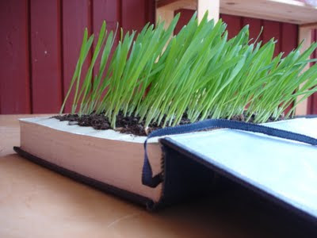
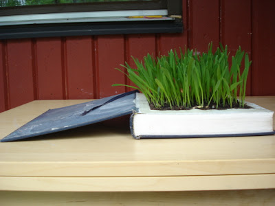

Leitura recomendada
{kind=link}

Olá olá pessoal. Hoje quero falar-vos do Baltasar. Não é o rei mago que vem na bíblia mas de alguma maneira faz magia e é rei no mundo das artes. Volta e meia, o Baltasar envia o produto final dos seus trabalhos com um pequeno texto descritivo. Agradeço desde já o eu estar incluído nessa lista de contactos. O Baltasar é um verdadeiro artista. Não sei bem em que categoria o colocar, mas julgo que escultor não lhe fica mal atribuído. Pena é que seja pouco. Por isso, e para encurtar distâncias, fica por artista e amigo. Ora a última criação do Baltasar, devido a uma coincidência de datas, quase dava azo a um mal entendido entre a sua e a minha actividade. Mas para que as coisas fiquem devidamente esclarecidas, nada como lê-las com cuidado, e se necessário, uma segunda ou terceira vez. Como é verão, aproveitem para se cultivarem (a última sugestão do Baltasar) e levem um livro convosco para a praia.
{kind=link}

Quanto a ti, camarada do Raminho: gosto disto! Muito.
Esta peça do Baltasar está sublime.
Viva ao Raminho! O Baltasar é o maior!